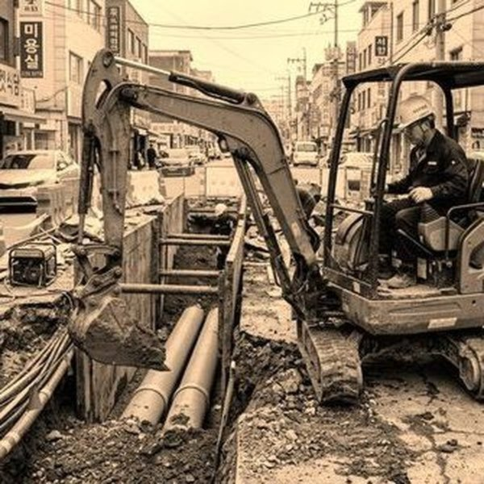
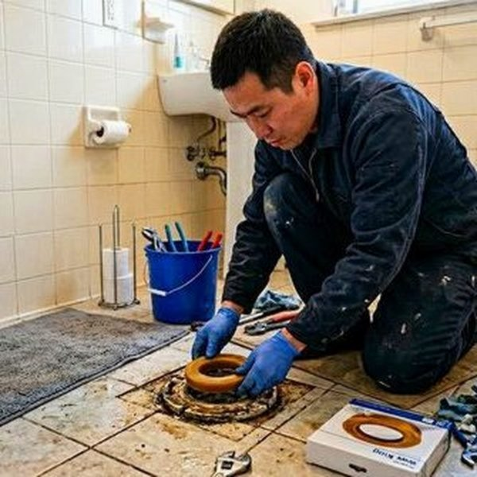
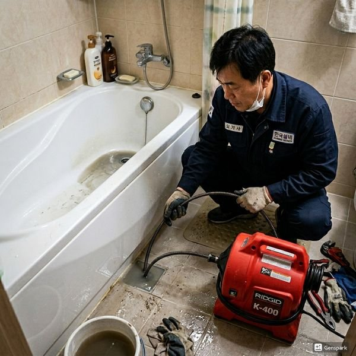

제우스시설관리 | 2025년 4월

배관이 막혔을 때 정확한 원인을 알기 위해서는 배관 내부를 직접 봐야 합니다. 이를 가능하게 하는 것이 CCTV 내시경 검사입니다.
방수 카메라가 달린 가는 케이블을 배관에 넣어 실시간으로 배관 내부를 촬영하는 기술입니다. 의료 내시경과 원리는 같지만, 배관용으로 특화된 고정도 카메라와 조명을 사용합니다.
✅ 막힘의 원인 (기름, 음식물, 머리카락, 뿌리 등)
✅ 배관 균열이나 손상
✅ 배관 연결부 탈락
✅ 배관 내 침전물 정도
✅ 배관 직경과 정상 상태 확인
✅ 누수 위치 특정
• 세대 내부만: 50,000~100,000원
• 세대 + 옥상 배관: 100,000~150,000원
• 공동주택 전체: 협의 (길이와 복잡도에 따라)
비용이 비싸 보이지만, 정확한 진단으로 불필요한 공사를 피할 수 있어 장기적으로 비용을 절약합니다.
1단계: 진입점 확인
일반적으로 싱크대 배수구나 화장실 배수관 근처에서 카메라를 진입시킵니다.
2단계: 카메라 삽입
방수 카메라가 달린 케이블을 천천히 배관에 밀어 넣습니다. 이 과정에서 실시간으로 배관 내부를 모니터에서 볼 수 있습니다.
3단계: 문제 부분 촬영
막힘이나 손상 부분을 여러 각도에서 촬영하고 위치를 기록합니다.
4단계: 보고서 작성
촬영 영상과 함께 문제 지점, 원인, 해결 방안을 정리한 보고서를 제공합니다.
• 막힘이 반복되는 경우
• 악취가 사라지지 않는 경우
• 배관 누수 의심
• 오래된 건물 배관 상태 점검
• 층간 분쟁으로 원인 파악이 필요한 경우
• 전세/매매 전 배관 상태 확인
단순 막힘인 경우: 드레인 기계 또는 고압세척기로 청소
배관 손상인 경우: 손상 부분 또는 전체 배관 교체
뿌리 침입인 경우: 특수 약품 처리 또는 배관 교체
CCTV 검사는 단순히 확인하는 것이 아니라, 정확한 수리 계획을 세우는 첫 단계입니다.

